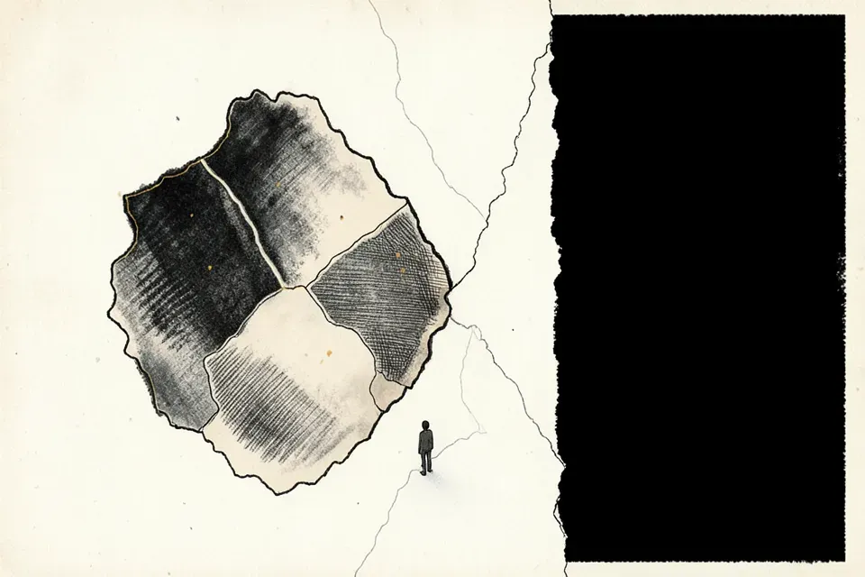
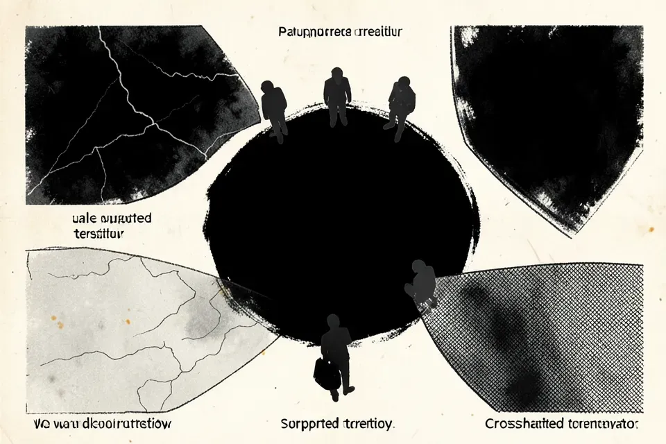
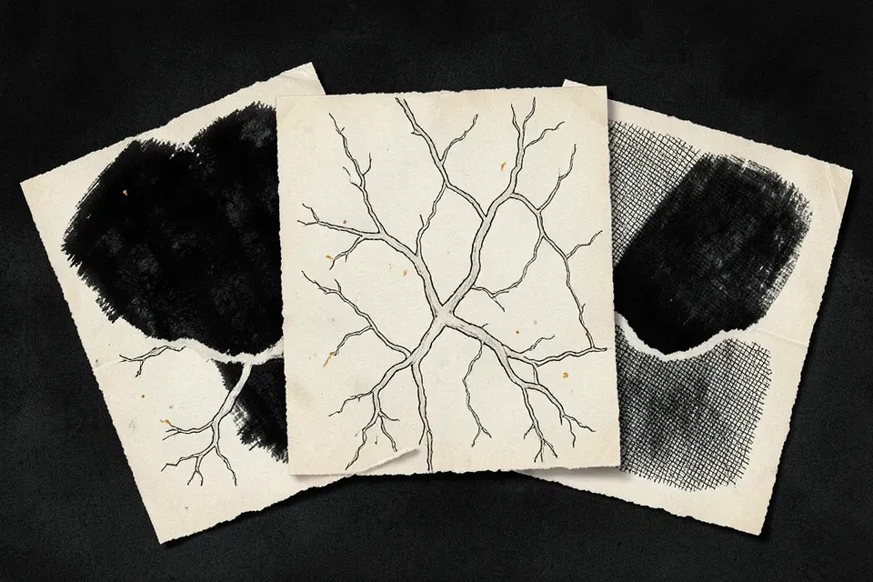
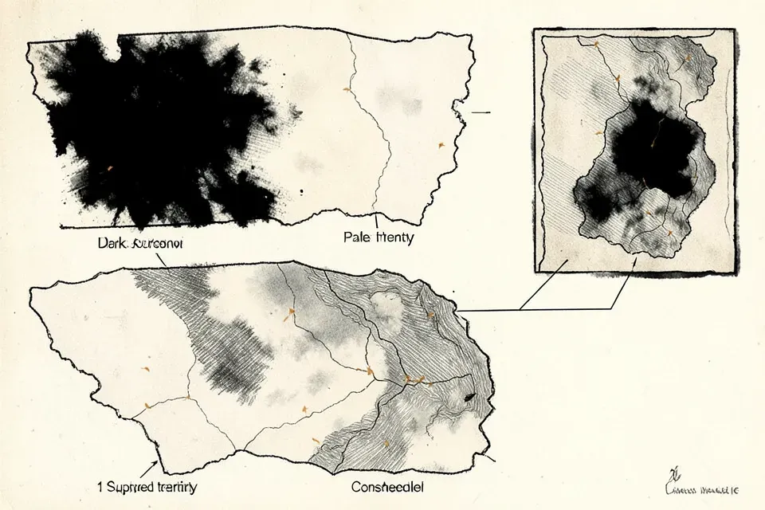

Design samples — not adopted
Story revelations through page 039.
Four alternatives for showing who knows what, compared on exactly the same fixtures and viewpoints. No family has been selected. These are design studies, not canonical story art.
Reading the maps
Dark: no available support, not proof of falsehood. Lit: available evidence, not certainty. Hatched: single-sourced or contested evidence. P6: unreachable, never lit or hatched. Re-fogging removes support, not terrain.
Viewpoints are provisional editorial models, not access to anyone’s interior. The 27 June responders stay within the same response boundary while the reader learns more.
Local model concept studies
Actual raster images generated locally with a diffusion model. These are exploratory visual studies, not exact evidence states. The SVGs below are the controlled semantic comparison; model-generated symbols and labels are not evidence.
Model: flux2-klein-4b · Licence: Apache-2.0
{kind=link}

Seed 42016 · 960 × 640 · 45.8 seconds
Exact local-generation prompt{kind=link}

Seed 42016 · 960 × 640 · 43.7 seconds
Exact local-generation prompt{kind=link}

Seed 42016 · 960 × 640 · 43.8 seconds
Exact local-generation prompt{kind=link}

Seed 42016 · 960 × 640 · 43.8 seconds
Exact local-generation promptLocal model finish studies
Structure-preserving local model finish studies: each image is generated locally by a diffusion model from the matching controlled SVG with its lettering removed, so the region outlines and evidence fills come from the drawing, not from the model. They are exploratory studies of ink, hatching and paper finish, not exact evidence states: fills can drift, so read the states from the SVGs and the model-drawn marks as texture only. Unlettered, not canonical, not adopted.
Model: flux2-klein-4b · Licence: Apache-2.0 · Image-to-image strength 0.6 · 4 steps · seed 42016 · 960 × 640

016 · observation boundary · Reader · 26.2 seconds
{kind=link}

016 · observation boundary · Reader · 24.1 seconds
{kind=link}

016 · observation boundary · Reader · 24.6 seconds
{kind=link}
![Structure-preserving local model finish study, unlettered, over the geometry of: Maps within maps: 016 / The unreachable field, Reader. Schematic drawn claim terrain; P1 hatched; P2 dark; P3 dark; P4 dark; P5 hatched. P1 outer foothold hatched. Observation islands: response dark, correction hatched, configuration hatched, weights dark. Reader models June responders; TENTATIVE ATTRIBUTION / NOT THEIR ACTUAL MAP. P6 remains dark and unreachable. Dark means no available support, not false. Contours remain fixed across fixtures. Design sample, not adopted.](../assets/knowledge-maps/local-v2/d-016-reader.webp)
016 · observation boundary · Reader · 24.8 seconds
{kind=link}
Controlled semantic studies
Version 1 · four families, forty SVGs
Compare 010 with and without the hint, 016, and 039 before and after the reveal, from reader and responder viewpoints.
Fog-of-war studies
Fog with a soft, irregular edge · three treatments, thirty SVGs
Fog-of-war studies on the same fixtures and viewpoints: the fog is a computed veil with a noise-displaced, feathered boundary; unexplored ground is opaque and re-fogged ground stays dimly visible. Not adopted.